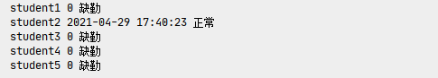

任务五 简易人脸考勤系统
【任务描述】
人脸考勤系统，就是依托人脸识别技术的考勤管理系统，人脸考勤系统采集员工的姓名，ID号，员工面部图片，员工在考勤后记 录会传递到考勤管理系统中，再由系统来运算缺勤，加班等信息。 本书中的简易人脸考勤系统场景为校园中的学生考勤，假设人脸数据可以通过校园管理系统得到，那么，整体的流程为：
- 获取上课的学生列表
- 为学生注册某一课程
- 搭建人脸特征库
- 上课前进行人脸识别签到
- 通过学生列表以及人脸识别的结果获得考勤记录
- 考勤分析

【任务实施】
步骤1 准备工作
首先我们假设从校园管理系统中获得了如下的数据，分别为学生的人脸图像。

然后，根据需求，创建如下目录结构，class 是存储某一节课的课程信息；face_features是人脸特征库，我们将提取到的人脸特征存储到这里；models存放haar分类器以及face_net模型；student_images是我们从校园管理系统中获取到的学生数据。

接着，我们将前面已经编写好了的一些函数放到utils中，方便后续直接调用：utils.py中的代码如下：
import tensorflow.keras as k
import os
import cv2
import numpy as np
os.environ['CUDA_VISIBLE_DEVICES'] = "-1"
face_date = cv2.CascadeClassifier('models\haarcascade_frontalface_default.xml')
model = k.models.load_model(r'models\facenet_keras.h5')
# 获得人脸ROI区域
def get_face_roi(img):
gray = cv2.cvtColor(img, cv2.COLOR_BGR2GRAY)
faces = face_date.detectMultiScale(gray, 1.3, 5)
# for face in faces:
# x, y, w, h = face
# img = img[y:y+h,x:x+w]
return faces
# 获得人脸特征
def get_face_features(img):
# 将图片缩放为模型的输入大小
image = cv2.resize(img,(160,160))
image = np.asarray(image).astype(np.float64)/255.
image = np.expand_dims(image,0)
# 使用模型获得人脸特征向量
features = model.predict(image)
# 标准化数据
features = features / np.sqrt(np.maximum(np.sum(np.square(features), axis=-1, keepdims=True), 1e-10))
# 添加代码-------------------
# np.save(r'knowface\face1',features)
# --------------------------
return features
# 加载人脸特征
def load_know_face(path):
npy_paths = [os.path.join(path ,p) for p in os.listdir(path)]
data =[]
face_names = []
for npy_path in npy_paths:
name = npy_path.split('\\')[-1].split('.')[0]
face_names.append(name)
data.append(np.load(npy_path)[0])
return data,face_names
# 计算人脸距离
def get_distance(image1,image2):
l1 = np.sqrt(np.sum(np.square(image1 - image2), axis=-1))
return l1
步骤2 批量获取特征
任务3 中我们获取人脸特征的方式比较简单粗暴，这里我们使用代码直接对一个文件夹中的图片进行人脸特征的提取，register.py中的代码如下：
import os
from utils import get_face_roi,get_face_features
import cv2
import numpy as np
from tqdm import tqdm
student_dir='student_images'
student_paths = [os.path.join(student_dir,p) for p in os.listdir(student_dir)]
for student_path in tqdm(student_paths):
student_name = student_path.split('\\')[-1].split('.')[0]
image = cv2.imread(student_path)
face_roi= get_face_roi(image)
features = get_face_features(face_roi)
np.save(r'face_features\%s'%student_name,features)
程序运行成功后可以在face_features文件夹中得到如下的人脸特征文件：
步骤3 实时人脸签到
接着，编写Attendance_Runtime.py中的代码为如下：
from utils import get_face_roi,get_face_features,load_know_face,get_distance
import cv2
import time
import json
# 加载学生数据
student_face_features ,student_names= load_know_face('face_features')
print(student_names)
# 开打摄像头
cam = cv2.VideoCapture(0)
# 初始化学生列表
student_signin_dist={}
for student_name in student_names:
student_signin_dist[student_name]='0'
while cam :
_,frame = cam.read()
# 获得人脸区域
faces = get_face_roi(frame)
# 对图像中的每一个人脸进行对比
for face in faces:
x, y, w, h = face
cv2.rectangle(frame,(x,y),(x+w,y+h),(0,255,0),1)
# 获得人脸roi区域
img_roi = frame[y:y + h, x:x + w]
# 获得人脸特征
face_features = get_face_features(img_roi)
# 计算人脸距离
distance = get_distance(student_face_features,face_features)
print(distance)
# 判断最小的距离是否小于阈值
min_dis_index = distance.argmin()
if distance[min_dis_index] < 0.7:
student_name= student_names[min_dis_index]
# print('已识别到此人为：%s' % student_name)
student_signin_dist[student_name]=time.strftime('%Y-%m-%d %H:%M:%S', time.localtime(time.time()))
cv2.putText(frame,student_name,(x,y-10),cv2.FONT_HERSHEY_COMPLEX,.5,(0,255,255),1)
else:
# print('未能识别此人')
cv2.putText(frame,'Unknow',(x, y - 10), cv2.FONT_HERSHEY_COMPLEX, .5, (0, 255, 255), 1)
cv2.imshow('cam',frame)
# 按下‘q’退出
if cv2.waitKey(1) ==ord('q'):
# 记录本次签到结果
json_ = json.dumps(student_signin_dist)
with open(r'class\student_att.json', 'w', encoding='utf8') as f:
f.writelines(json_)
break
cam.release()
cv2.destroyAllWindows()
程序运行后，你将会看到如下的界面，黄色字体为识别到的学生名称，并且使用按键’q’可以退出签到系统。

在退出时会同时保存签到信息成json文件到class文件夹中，保存的信息如下，如果已经签到，则会保存签到时间，如若还未签到，这为’0’。

步骤4 考勤分析
新建一个query.py文件用来分析保存好的json文件，可以写入如下的代码进行分析：
import json
import time
path = 'class\student_att.json'
# 定义上课时间 格式固定
start_class_time ='2021-04-29 17:41:00'
start_class_time_stamp = time.mktime(time.strptime(start_class_time, '%Y-%m-%d %H:%M:%S'))
with open(path, 'r', encoding='utf8') as f:
class_datas= json.loads(f.read())
class_datas_dict = dict(class_datas)
for name in class_datas_dict.keys():
att_time = class_datas_dict[name]
if att_time == '0':
state = '缺勤'
else:
# 如果签到时间大于上课时间则是迟到
att_time_stamp = time.mktime(time.strptime(att_time, '%Y-%m-%d %H:%M:%S'))
time_ = start_class_time_stamp-att_time_stamp
if time_<0:
state = '迟到'
else:
state='正常'
print(name,att_time,state)

本任务实战代码如下,位于/xm3/rw5.ipynb 同学们来运行一下吧